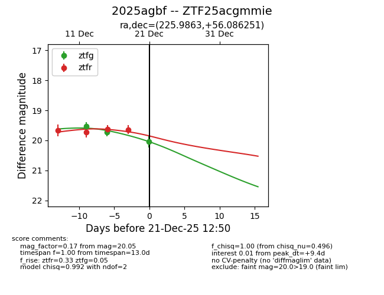
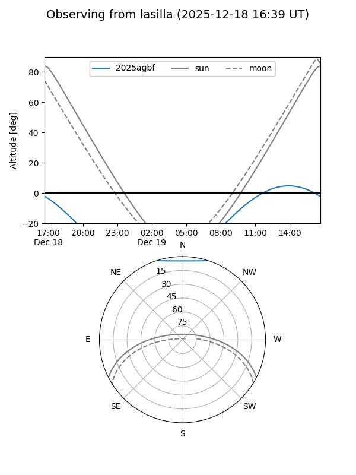
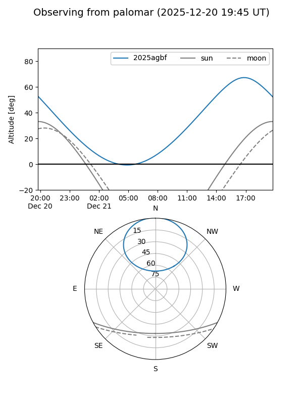
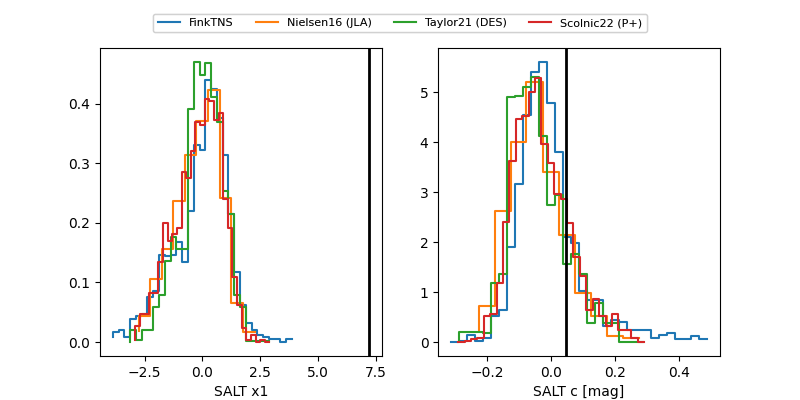

2025agbf
Target 2025agbf at 2025-12-21 13:52
Aliases and brokers:
FINK: fink-portal.org/ZTF25acgmmie
Lasair: lasair-ztf.lsst.ac.uk/objects/ZTF25acgmmie
ALeRCE: alerce.online/object/ZTF25acgmmie
TNS: wis-tns.org/object/2025agbf
YSE: ziggy.ucolick.org/yse/transient_detail/2025agbf
alt names
ZTF25acgmmie (ztf,fink_ztf)
2025agbf (tns,yse)
Coordinates:
equatorial (ra, dec) = 225.9863,+56.08625
equatorial (HMS+DMS) = 15:03:56.71,+56:05:10.50
galactic (l, b) = (92.8091,+52.58588)
Flags:
Photometry:
last ztfg=20.05, ztfr=19.72
3 ztfg, 5 ztfr detections
Lightcurve

Visibility


Additional plots
